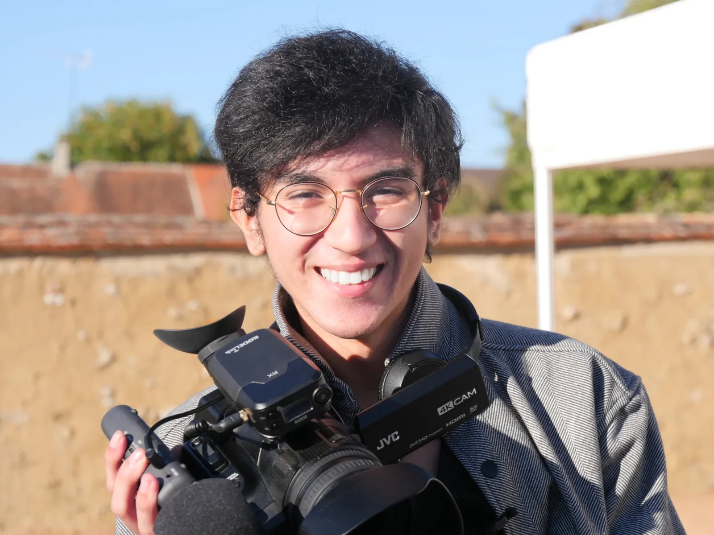
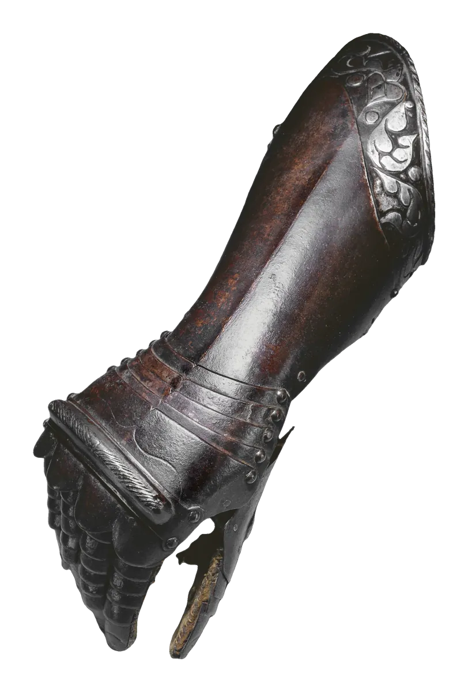
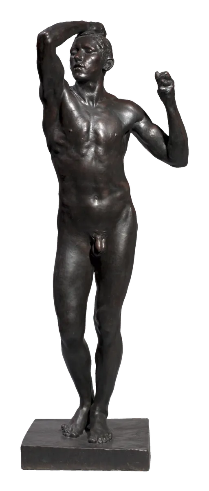
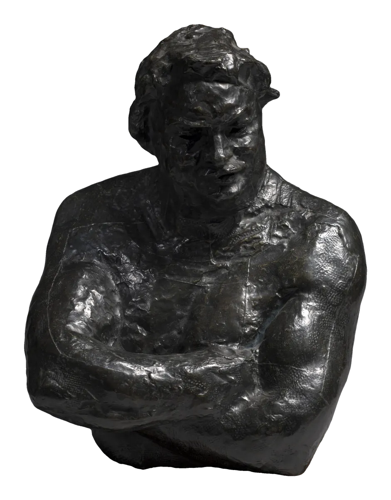

À propos
Je suis ingénieur développeur full stack, diplômé du Master Informatique de l'INSA Hauts-de-France. J'écris surtout du TypeScript : Angular et Ionic côté client, NestJS et PostgreSQL côté serveur, et du React Native pour le mobile.
Avant le code, il y a eu le design : trois ans de BUT MMI à Meaux. J'y ai pris l'habitude de tester une interface avec les gens qui vont s'en servir. Puis BTP-360 : pendant mon stage de fin d'études, seul, une application en production pour quatre sociétés.
Aujourd'hui, je cherche mon premier CDI. Je suis à Troyes, prêt à déménager, et ouvert à l'hybride comme au télétravail.

Ma façon de travailler

Partir des gens
Je pense d'abord à ceux qui vont se servir de l'outil, sur un chantier ou un casque VR sur la tête, et seulement ensuite à la stack. Le BUT MMI m'a appris à tester une interface avec les personnes qui vont s'en servir.

Tout écrire
La documentation, les décisions, les tests. Seul sur BTP-360, c’est ce qui m’a permis d’aller vite sans casser ce qui marchait déjà.

L’IA écrit vite, je décide
Je code avec des agents (Claude Code, Codex). Je cadre le besoin, j'écris la spécification, je relis chaque diff comme celui d'un collègue et je décide de ce qui part en production.
Parcours
-
2021Troyes
Le déclic
Bac STI2D, option Systèmes d'information et numérique, au lycée Saint-Joseph La Salle. J'y écris mes premiers programmes.
-
2021Meaux
Le détour par le design
Trois ans à Meaux pour un BUT MMI : code, UX, vidéo, graphisme.
-
2022Troyes
Mon premier outil métier
Deux mois d'assistant administratif chez Ophta Médical. En voyant le planning de l'équipe, j'ai construit un tableau qui calcule les heures et les heures supplémentaires de chacun.
« Il nous a apporté des idées pour compléter notre planning du personnel, en créant un tableau qui permet de calculer les heures de travail journalières et de visualiser les heures supplémentaires de chaque employé. »
-
2023Saint-André-les-Vergers
Premier site livré en entreprise
Trois mois chez Réseau Sûr France pour livrer leur nouveau site, avec l'équipe marketing et des demandes qui changent jusqu'au bout.
Réseau Sûr France« Ziyad a su mettre en avant ses compétences et son savoir-faire tout au long de son stage. Il s’est adapté très rapidement à l’entreprise, à sa charte graphique ainsi qu’à son fonctionnement. »
-
2023Troyes
Dix mois d'e-commerce
En alternance chez Distri Sûr France, j'ai conçu et développé la boutique en ligne, des maquettes Figma à la mise en ligne sur Odoo.
Distri Sûr France -
2024Valenciennes
Cap sur le métavers
Master Sciences et Technologies du Métavers à l'INSA Hauts-de-France : réalité virtuelle, IA, mobile, blockchain, big data. Et l'équipe e-sport de l'école entre deux rendus.
Réalité virtuelle -
2026Troyes
BTP-360, seul aux commandes
Stage de fin d'études chez Iso Sûr France : remplacer les fichiers Excel de quatre sociétés par une seule application, web et Android, en production sur AWS.
BTP-360 -
2026Troyes
Et maintenant
Diplômé, de retour à Troyes, je cherche mon premier CDI de développeur full stack. SubForge avance en parallèle.
SubForge
Langues
- Français bilingue
- Arabe langue maternelle
- Anglais C1
- Espagnol notions
Hors de l’écran : l’e-sport en semi-pro avec l’équipe de l’INSA, la guitare et le chant, la photo, la musculation (d’où SubForge) et les mangas, JoJo’s Bizarre Adventure en tête (assez pour en tirer une pub animée).
Stack
Chaque outil renvoie au projet qui le prouve.En productionSur des projets
Front et mobile
- Angular (En production)BTP-360
- Ionic (En production)BTP-360
- NgRx (En production)BTP-360
- Capacitor (En production)BTP-360
- TypeScript (En production)BTP-360, SubForge
- RxJS (En production)BTP-360
- React Native (Sur des projets)SubForge
- Expo (Sur des projets)SubForge
- Next.js (Sur des projets)Portfolio Next.js
- Tailwind (Sur des projets)Turaty Naturels
- Android (Java) (Sur des projets)lolop
- Kotlin (Sur des projets)Facture Android
Back-end et données
- NestJS (En production)BTP-360
- Prisma (En production)BTP-360
- PostgreSQL (En production)BTP-360, SubForge
- Socket.IO (En production)BTP-360, SUBCHAINE
- Supabase (Sur des projets)SubForge
- Node.js (Sur des projets)ZABI, SUBCHAINE
- MongoDB (Sur des projets)ZABI
- Symfony (Sur des projets)Turaty Naturels, Gestionnaire d’articles
- MySQL (Sur des projets)Turaty Naturels, Gestionnaire d’articles
- Odoo (En production)Distri Sûr France
- Python (Sur des projets)Prénoms et Hadoop, Wifi auto
IA appliquée
Mise en production et qualité
- Docker (En production)BTP-360, Turaty Naturels
- AWS (En production)BTP-360
- Terraform (En production)BTP-360
- GitHub Actions (En production)BTP-360
- Playwright (En production)BTP-360
- Jest (Sur des projets)SubForge
- Sentry (En production)BTP-360, SubForge
- Azure (Sur des projets)Hôtel : gestion et paie
Réalité virtuelle et 3D
- Unity (Sur des projets)Réalité virtuelle, JPO IUT de Meaux
- C# (Sur des projets)Réalité virtuelle
- XR Interaction Toolkit (Sur des projets)Réalité virtuelle
- OpenXR (Sur des projets)Réalité virtuelle
- Blender (Sur des projets)JPO IUT de Meaux
Design et méthode
- UX et UI (En production)BTP-360, SubForge, Distri Sûr France
- Figma (En production)Distri Sûr France, Réseau Sûr France
- Suite Adobe (En production)Réseau Sûr France, Pub Steel Ball Run
- RGPD (En production)BTP-360
- SEO (En production)Distri Sûr France